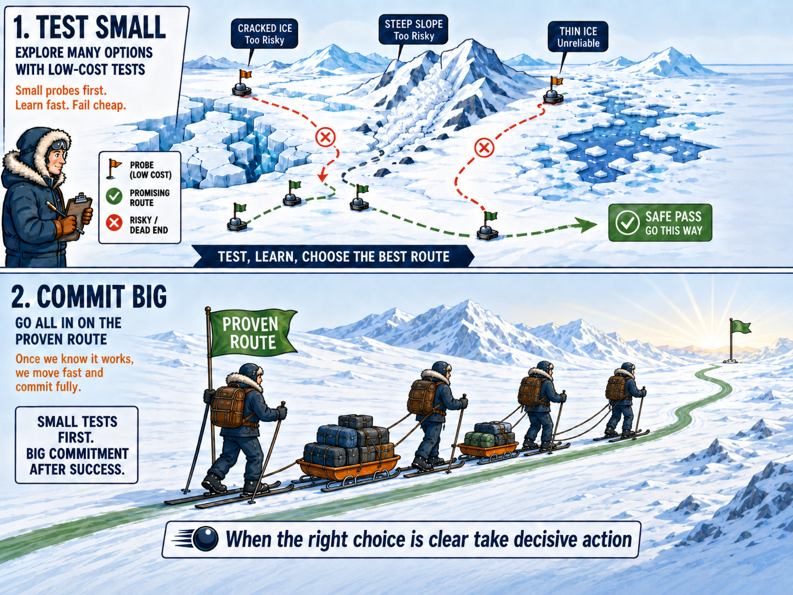

Test and Scale — the principle
- Test cheaply — small cohorts, shadow runs, side-by-side compares
- Then commit — promote only when evidence supports scale
- Not heroics — disciplined experimentation, not big-bang guesses
Test definitions and reporting products cheaply before embedding them in governance and service decisions.
